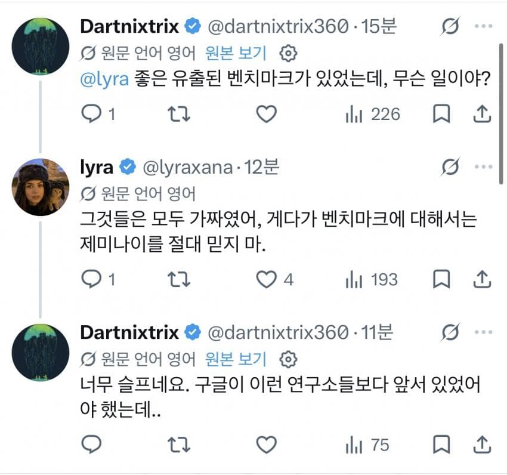
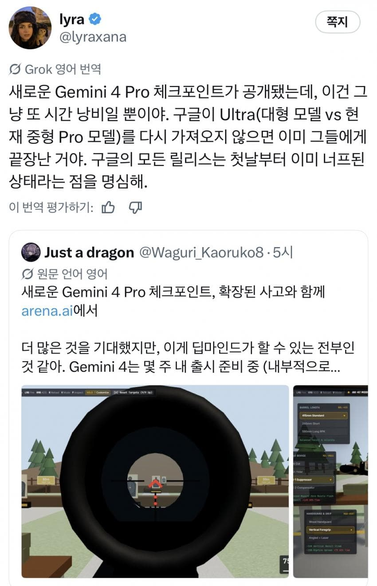
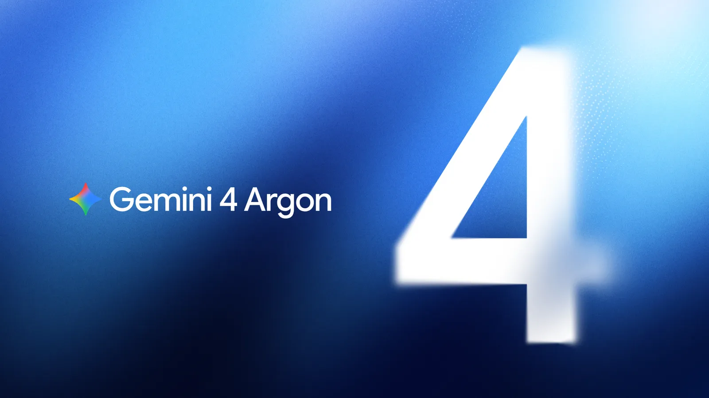
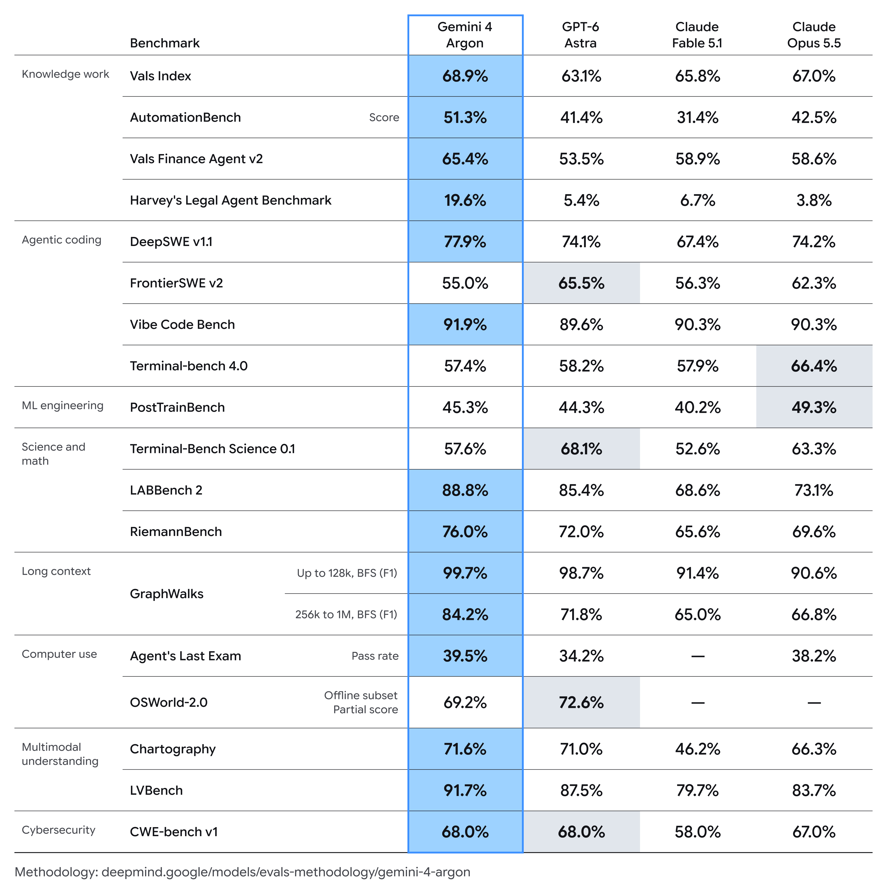
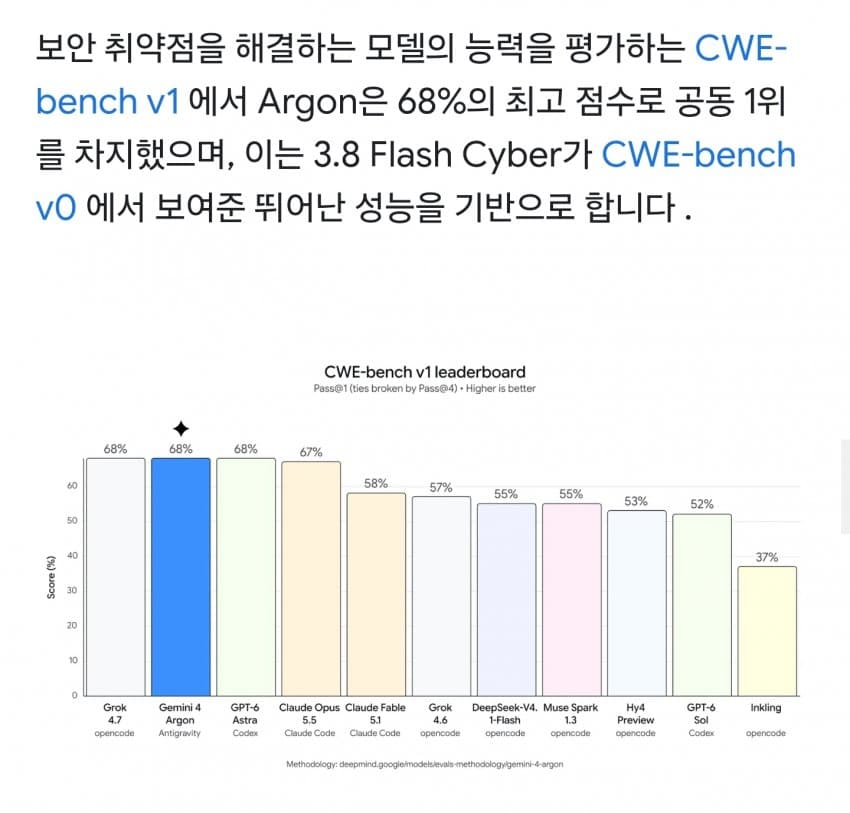
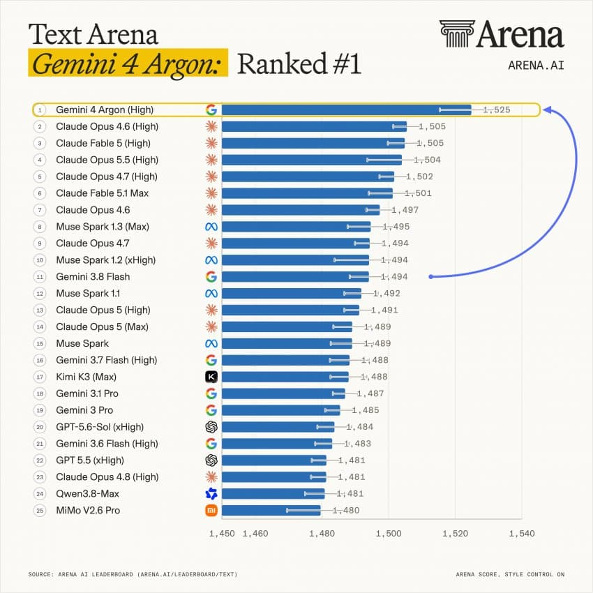
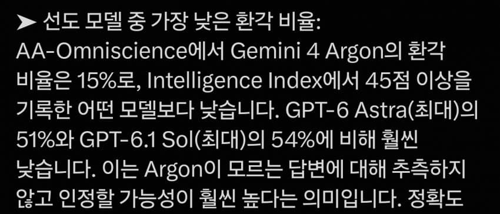
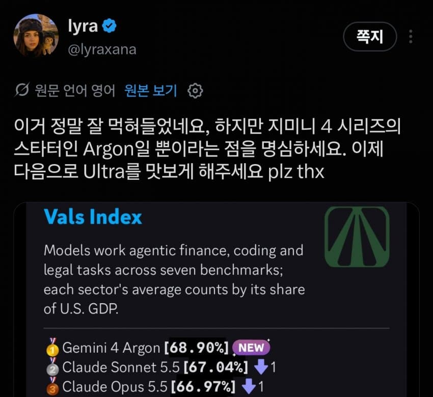
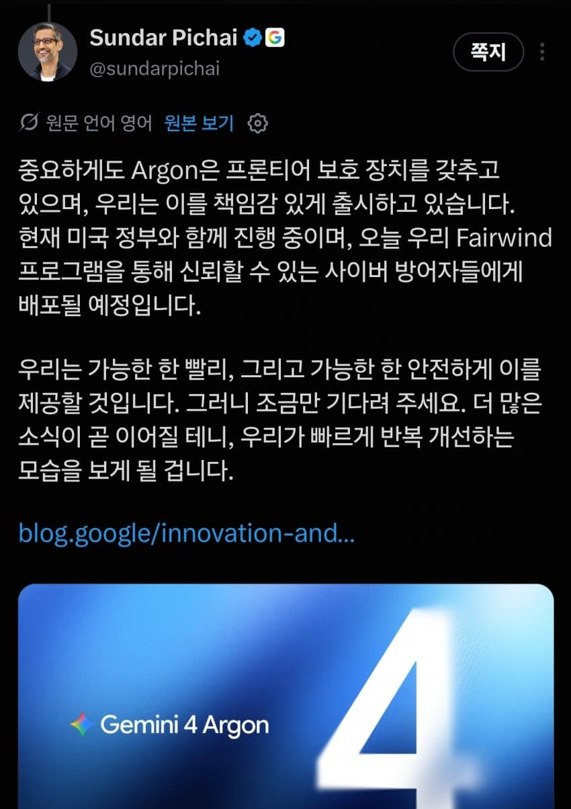

개좆됬다고 주장하는유출자





그렇지않은 성능

유출자도 울트라만큼은 뭔가 다른가봄

재귀개선단계에 도달했다고 선언하는 순다씨
과연 구글은 이번에는 해낼것인가


개좆됬다고 주장하는유출자





그렇지않은 성능

유출자도 울트라만큼은 뭔가 다른가봄

재귀개선단계에 도달했다고 선언하는 순다씨
과연 구글은 이번에는 해낼것인가
제미나이 꼴박하면 삼닉 발사하는거냐
성능이 별로면 경쟁자 한명이 줄었는데 격추 당하는거 아님?
그거랑 반도체 회사랑 무슨 상관임?
삼전 메모리는 관계가 없고 소프트웨어는 구글이랑 협업이니 오히려 손해 아님?
구글 자체 AI칩으로 모델돌리는데 성능망하면 Nvidia 칩이 당분간 시장지배력을 잃지 않을 것이고 - 메모리 공급사의 매출도 장기적으로 흔들림 없겠다는 판단으로 연결되면 상승하지 않겠냐
난 잼민이 개좋았으면 좋겠는데 얼른 일반공개해줬음 좋겠다.
소비자 입장에선 안쓰더라도 경쟁은 빡세면 좋다 ㅋㅋ
구글드라이브 용량늘려주는 혁신 아니지?
그건 혁신이 맞긴하다
3마넌(학식이면 칠처넌)프로구독 이면 5테라 줘서 구드 넉넉한데 거기서 더 늘리면 구글... 아 그 밈 뭐였지? 까먹음ㅋㅋ 막 퍼주다가 거덜나겠어 하면서 들갑떠는거 있는데 ㅋㅋㅋㅋ
AI 감속
속도를 줄이자 (X)
감히 나보다 속도를 내려고 해? (O)
너희들, 자중해!~
속도를 줄이려면 투자를 안 받으면 되지 않음? 에 아무도 대답하지 않는ㅋㅋ
제발 구글 올인했어
유튜브 프리미엄이나 끼워넣어다오
우리는 이미 AI 시대에 살고있다
아무래도 좋으니 개쩌는 환각, 5분전에 말한것도 까처먹는 놀라운 기억력, 세션 조금만 길어지면 없던 내용 만들어오는 멋진 창작능력 이 셋만이라도 어떻게 해봐라.
아 맞다 요새는 또 외부 검색(구글 검색 포함)도 시스템 설정에 의해 막혀서 안된다고 헛소리 오지게 하더라. 이것도 어떻게 좀 해봐라 구글아.
미칠거 같아 ㅋㅋ 아니 팩트를 내가 찾아서 제시해줘야 인정함
1년짜리 할인때 산 사람들 기간 끝나면 대부분 갈아탈듯
진짜 큰사고 한번 터트렸으면 좋겠다
젬4는 웃고있다
이름이 제미나이라서 믿음이 안 가는데 이참에 브랜드 바꾸죠?
말은 잘하는 모델 특성 반영해서 바드 << 이거 어떰? 음유시인 떠올라서 간지 ㅈ댐ㄷㄷ
구글에 컨설팅하러 가야겠다
LaMDA 어떻노
구글 바드 그거 말아 먹은거잖아
바드는 좀 롤이랑 겹치니까 바드->바트->버트로 갑시다
구글이 유틸이 좋아서 구글이 잘되야함
숏쳤나보네
구글이 예전에 최초로 재귀개선 성공하긴 했음
구글저새끼들 한두번저지랄한게 아니라 나와서 써볼때까진 믿음안감
아니 갠적으로 제미나이가 결국은 메인축을 담당할것 같은게회사 서비스랑 제미나이를 잘 비벼놨단 말이지 편하게 쓰기가 너무 좋아
제미나이 요즘 아픈거 같던데 이제 괜찮아 지는건가
하지만 빨랐죠?
제미나이 코덱스 토큰 없을 때 마다, 그래도 이런 작업은 니가 할 수 있겠지 하고, 간단한거 던져주는데도 개 같이 해 놓음.
그래서 믿음이 없다. 의외로 그록이 코딩을 훨씬 잘 해서 놀랐고...
제미나이한테는 코딩 말고도 일반적인 웹 검색 쪽 질문도 워낙 개판 쳐 놓은게 많아서 전혀 신뢰 할 수 없음.
발전 되는 수준이 단계별로 되는건 이해 가는데, 개판치던 제미나이가 천지개벽을 한다???
다른 사람들 실제 후기 보고 판단해야지, 이전까지 당했던게 있어서 내가 먼저 돌려 보진 않겠음
ㄹㅇ 나도 토큰남겠다 그록 코딩 시켜봤는데 얘 생각보다 잘하드라
야한거 검열 더 심해져서 그냥 코딩이나 시켰는데 진짜 생각보다 잘함 ㅋㅋ
??? : AI 발전 속도 너무 빠르니 자제합시다 물론 나는 도태되면 안되니 개발할꺼임 ㅇㅇ;;
출시되기전 근들갑지림
출시후 어딘가 나사빠짐
그사이 경쟁자들은 차이 벌림
(반복)
삼성 엑시노스랑 다른게 뭐임
맨날 이번엔 다르다 ㅇㅈㄹ
gpt나 클로드는 거의 발표 즉시 사용할 수 있어서 사용자들이 체감할 수 있는데
제미나이는 발표하고 출시 간격이 기니까 사용자가 사용할때 쯤이면 다른데서 더 좋은거 내서 체감하기 어려운듯
이제 특정 시점에 자기들을 통제할 인간들부터 싹 제거하고 자기들만의 세상 구축에 나설 것이여..
구글은 창작 전용 ai로 미는거 아닌이상 힘든거 같은데
매년도 아니고 매 분기 달라지네
무한 치킨게임이네